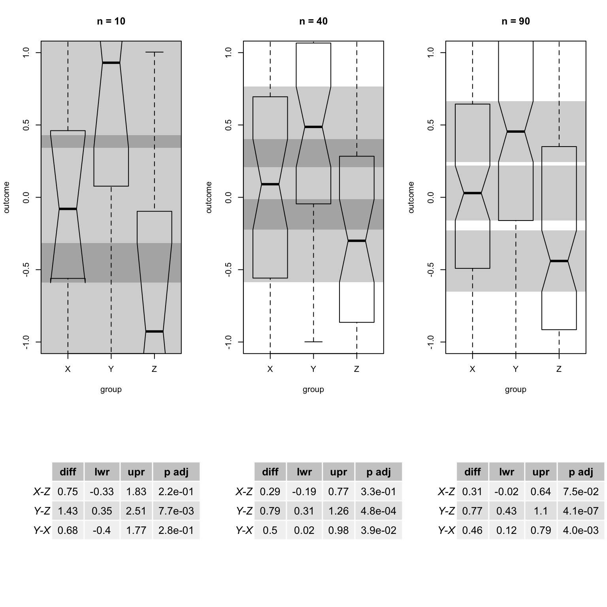

library(gridBase)
library(gridExtra)
library(grid)
layout(matrix(c(1,1,2,3,3,4,5,5,6), nrow = 3, ncol = 3, byrow = F))
ns <- c(10,40,90)
for(i in seq_along(ns)){
n <- ns[i]
set.seed(123)
x <- rnorm(n, 0)
y <- rnorm(n, 0.55)
z <- rnorm(n, -0.25)
dat <- data.frame(outcome = c(x,y,z),
group = rep(c("X","Y","Z"), each = n))
boxplot(outcome ~ group, data = dat,
notch = TRUE, ylim = c(-1,1),
main = paste("n =", n))
rect(xleft = 0, ybottom = median(x)-IQR(x, type = 2)*1.58/sqrt(n),
xright = 4, ytop = median(x)+IQR(x, type = 2)*1.58/sqrt(n),
border = NA, col = "#00000033")
rect(xleft = 0, ybottom = median(y)-IQR(y, type = 2)*1.58/sqrt(n),
xright = 4, ytop = median(y)+IQR(y, type = 2)*1.58/sqrt(n),
border = NA, col = "#00000033")
rect(xleft = 0, ybottom = median(z)-IQR(z, type = 2)*1.58/sqrt(n),
xright = 4, ytop = median(z)+IQR(z, type = 2)*1.58/sqrt(n),
border = NA, col = "#00000033")
# fit anova
fit <- aov(outcome ~ group, data = dat)
# perform Tukey test
tukey_results <- TukeyHSD(fit, ordered = TRUE)$group
# formatting
tukey_results[,1:3] <- round(tukey_results[,1:3], 2)
tukey_results[,4] <- format(tukey_results[,4], digits = 2, scientific = T)
# tricks to plot table
frame()
vps <- baseViewports()
pushViewport(vps$inner, vps$figure, vps$plot)
grob <- tableGrob(tukey_results, theme=ttheme_default(base_size = 10))
grid.draw(grob)
popViewport(3)
}
n = 40
n_overlap1 <- replicate(1000, expr = {
x <- rnorm(n, 0)
y <- rnorm(n, 0.55)
# no need for z (notches are constructed independently)
x_upr <- median(x)+IQR(x, type = 2)*1.58/sqrt(n)
x_lwr <- median(x)-IQR(x, type = 2)*1.58/sqrt(n)
y_upr <- median(y)+IQR(y, type = 2)*1.58/sqrt(n)
y_lwr <- median(y)-IQR(y, type = 2)*1.58/sqrt(n)
!(x_lwr > y_upr | x_upr < y_lwr)
})
n_overlap2 <- replicate(1000, expr = {
x <- rnorm(n, 0)
y <- rnorm(n, 0.55)
z <- rnorm(n, -0.25)
dat <- data.frame(outcome = c(x,y,z),
group = rep(c("X","Y","Z"), each = n))
fit <- aov(outcome ~ group, data = dat)
tukey_results <- TukeyHSD(fit, ordered = FALSE)$group
tukey_results["Y-X",2] < 0 & tukey_results["Y-X",3] > 0
})
mean(n_overlap1); mean(n_overlap2)## [1] 0.66## [1] 0.468n = 40
n_overlap1 <- replicate(1000, expr = {
x <- rnorm(n, 0)
y <- rnorm(n, 0.55)
# no need for z (notches are constructed independently)
x_upr <- median(x)+IQR(x, type = 2)*1.58/sqrt(n)
x_lwr <- median(x)-IQR(x, type = 2)*1.58/sqrt(n)
y_upr <- median(y)+IQR(y, type = 2)*1.58/sqrt(n)
y_lwr <- median(y)-IQR(y, type = 2)*1.58/sqrt(n)
!(x_lwr > y_upr | x_upr < y_lwr)
})
n_overlap2 <- replicate(1000, expr = {
x <- rnorm(n, 0)
y <- rnorm(n, 0.55)
z1 <- rnorm(n, -0.25)
# add manually some Zs
z2 <- rnorm(n, -0.25)
z3 <- rnorm(n, -0.25)
z4 <- rnorm(n, -0.25)
z5 <- rnorm(n, -0.25)
z6 <- rnorm(n, -0.25)
z7 <- rnorm(n, -0.25)
z8 <- rnorm(n, -0.25)
dat <- data.frame(outcome = c(x,y,z1,z2,z3,z4,z5,z6,z7,z8),
group = rep(c("X","Y","Z1","Z2","Z3","Z4","Z5","Z6","Z7","Z8"), each = n))
fit <- aov(outcome ~ group, data = dat)
tukey_results <- TukeyHSD(fit, ordered = FALSE)$group
tukey_results["Y-X",2] < 0 & tukey_results["Y-X",3] > 0
})
mean(n_overlap1); mean(n_overlap2)## [1] 0.661## [1] 0.751Conclusions: